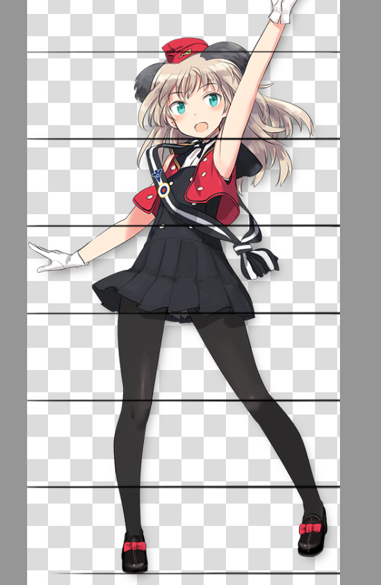
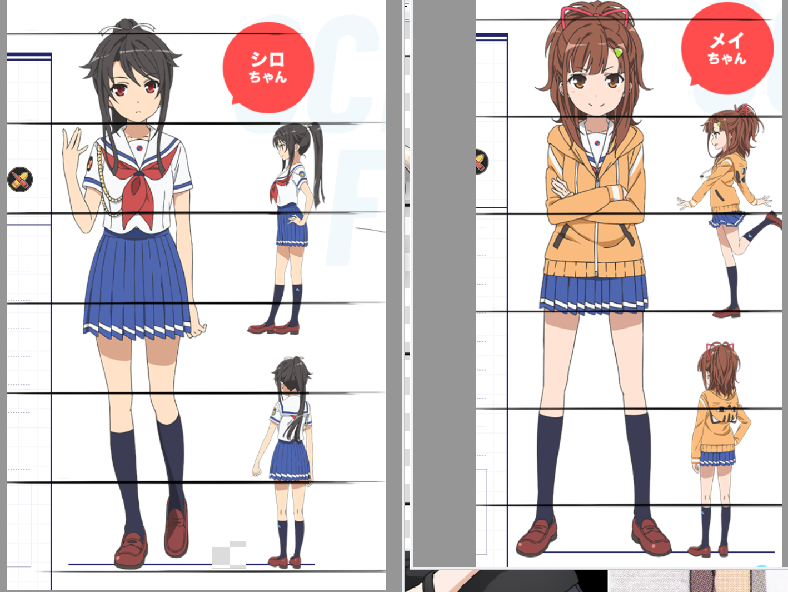
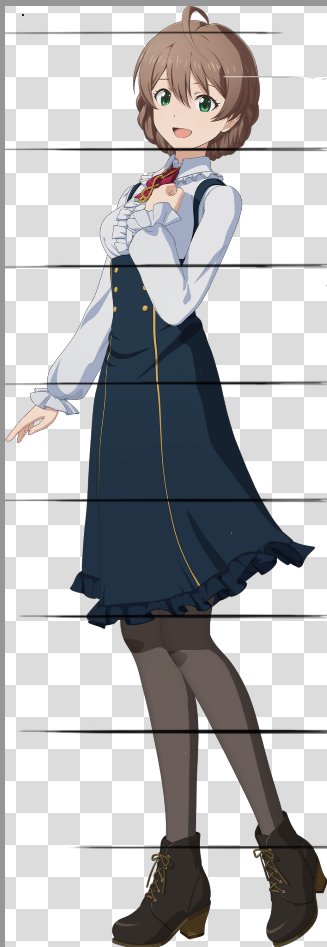
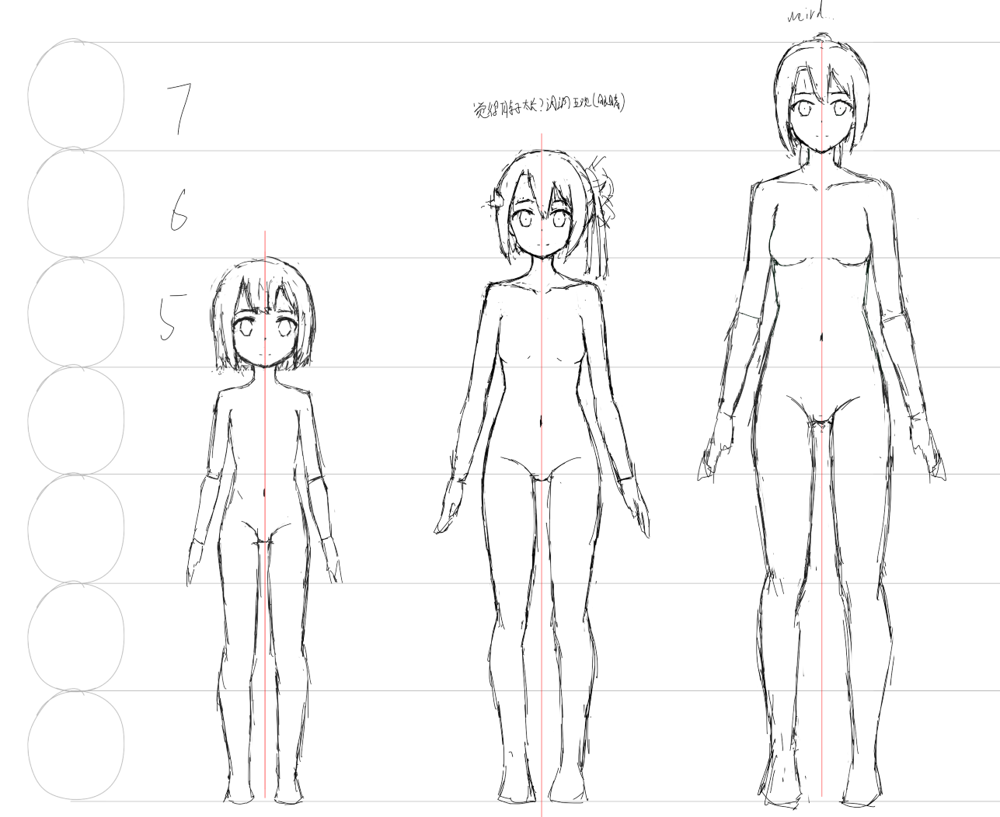

人体比例研究 1
研究比例和体块，作为人体学习的开始。
这是 PBL 真正开始发功的时候——研究人体这样系统、再现性的东西。我应当能够有收获，我心里有一种自信。
我要再次提醒一下自己，我当前不是要把每一根线条，每一块体积的意义全都弄清楚，我当前的目的是弄清楚大的形状，大的体块，以及整个的平衡性，太过细微的东西，比如膝盖的形状，髋骨的外沿儿的突起，这些等后面再细细研究。螺旋上升！
但比例也不必强求，没有人会按照理想比例去画人的，大的关系对了就 OK。
这里只研究大体块，像手肘、膝盖的形状实际上也是至关重要的，但这个项目我估计不会研究它。
这个项目是为人体开个头，我现在把人体的东西过一遍，用自己的语言描述一遍后，后面再看到人体绘画，我便会观察地更深刻，真正的提升发生在那个时候。
下次定项目的时候得把想学的东西先定出来……一个检查清单，完成项目后我要能够做到什么。
比例
本打算雨露均沾，但想到我之前提到的，我应当以一个画师为轴心，以它为前提去看其他的画师的教程。
我手上系统的二次元的人体书有两本，《理解人体解剖学 完成超出色角色设计》和《漫画基础 新手避坑指南》。两者各有侧重，后者的画风我更喜欢一些，但它在思想上更“平面”一些，前者则是从体块出发的。这两本我都会参考。但比例上先看后者。
比例究竟是什么？我说，比例回答这些问题——肩相对于头的宽度有多宽，手臂是从胸腔的何种位置长出来的，手肘、手腕的位置在哪里。
但，我不止是研究比例——研究比例必定会涉及到人体全身的正面，侧面像，这时候，观察其二维形状，对掌握人体的平衡是有意义的。
先看后者。画不多说，我先临摹一下作者所说的六点五头身（稍微做一些修改改一下它的脚的透视）。
在做这种临摹的时候，能够感受到 V 大预科作业中所教的（以及过去看过的绘画书中所说的），使用形状思维进行思考的方式的益处，让我方便观察比例，形状。可以说形状思维在为空间思维提供原材料。

作者认为，从耳朵向下做垂线是重心，观察到侧面图中重心过脖子中央，后背的最靠内的点，以及足弓。
总之，先观察各部分的比例和形状，然后再给出一种建构法——通过头部，根据前面观察到的比例，去构建出整个人体的形状，即找到这里的底层逻辑。从头部的比例出发去得到所有的比例，是一个正常操作。
这里说的头部，是包含头发的厚度的，但水平方向上不包含……先这么用着，看符不符合实践需要。
我怀疑下面有些观察到的东西来自于作者的风格而非普适性。
整体比例（水平方向）
首先看水平方向上的比例。能够观察到：
从正面看：
- 肩宽差不多是 1.2 倍的头宽（头算上头发），这个是随着头身比，性别，画风会变的，现实中的话女性大概是2头左右，男性大概是2.5头左右（均算上头发），但一般都不会太夸张，因为骨盆和肩宽的比例很重要
- 对女性，胯部最宽处比肩宽稍大（就骨骼上来说，骨盆宽度通常是比肩膀窄的，但因为脂肪的原因，胯部显得比肩宽或一样宽，在二次元中一般会强调胯部比肩宽），男性的话则是肩更宽，这也是为什么女性的标志是一个向上的三角，男性是向下的
- 胯部最宽的地方大概是耻骨的高度
- 网上找到的很多模特图像，肩普遍是比胯宽的，这好像是说因为肩宽更上镜
- 这种正常的稍微放松的站立姿势的话（不是立正，双脚并拢那种），小腿外侧最宽的地方比胯宽稍窄。
从侧面看：
- 胸腔，盆骨两个体块（算上脂肪的话）在水平方向上的长度是接近的，脚的长度同样接近
- 水平方向上头骨和胸腔长度似乎一致，算上头发的话头骨长度更大
- 后脑勺，胸腔背后最靠外处，臀部最靠外处，小腿腿腹最靠外处，这四个点基本上在同一条垂线上，但小腿腿腹最靠外处是最靠后的
- 身体前侧能看到一个明显的垂线，这个垂线往下落正好到脚尖，面部离这个垂线稍微有一点距离
整体比例（竖直方向）
竖直方向上的比例的话就大都和头身比做比较了。
- 首先看整体——身高一半的地方即为耻骨，其下是腿部，膝盖在腿部的二分之一处（这个作者大腿似乎画短了？），再向上一半是乳头的高度（这个……说的是男性吧，女性的乳头稍微更高一些），乳头和耻骨的二分之一处为肚脐。
- 这里唯一不变的，可以说只有耻骨的高度，将人体一分为二（但这个其实也并非完全准确，有的画师画的，其下半身是比上半身还长的，但仍旧显腿长）
- 注意下颌长度和脖子长度几乎相等，成一个比直角稍大的角，脖子是前伸的
- 听说锁骨和下巴的高度差为半个头时是模特身材，但这里肯定没算头发
- 锁骨以下（以锁骨的水平高度切掉其上部分，对胸腔的这个切法对简化问题是有益的）的胸腔的高度为一个头左右
- 腰部最细处，同时也差不多是胸腔快结束的地方稍微往上，也是侧面看最靠里处的高度，大概是肚脐向上二分之一个头。
各作品头身比
我先观察一下各种不同作品的设定集中的头身比：
结城友奈， 5.2 - 5.8 头身左右（这太极端了……），但仍旧没有多少萝莉感（我觉得这个只是我的思维惯性了，她们放到其他作品中确实看着就完全是萝莉了）。

我那霸响，6 头身，顺便设定上最高的梓是稍大于 6 头身（头发的厚度真的很影响这个判断！）。

非常奇特……这两个作品，算上头发后头宽和肩宽基本一致了，这难道是常态？继续观察。
波奇，她的肩宽就没那么夸张（1.2 头大概，但这衬衫……显肩宽啊），但头身比也是 6 头身。

光辉魔女，大概也是 6 头身，肩宽的话也是小于 1.2 头的感觉。

高校舰队的芽依，5.5 头身，但头发等与肩宽，顺便比她高 10cm 的真白，也没有 6 头身，但头发稍窄于肩宽。

再……换一个！偶像大师百万剧场，它的人设被吐槽过说手脚太细长了：

这基本上已经快赶上八头身了，偏偏它肩宽还是和其他作品一样没有太宽，
再比了下 EVA 和黑礁的，这俩就大于 1.5 头了，黑礁则是基本是 2 头了，现实的比例。
总之，建立了一些印象。
比起头身比，我变得更加关心肩宽了。
各头身比绘制尝试
在细致研究和换书之前，尝试默画一下 5 头，6 头，7 头身的正面的友奈（其实就修改发型，胸部和肩宽，但脸的结构也想做做区分试试，虽然这是超纲的）。但以她的设定图的上半身为参考。

我总觉得7头身怎么看怎么怪，可能原因应该是，这个头身比对应的身高太高了……也可能是不考虑头发的话这个头身比实际上已经接近8头身了。
或许，最终的解决方式是，不要画“这种”七头身，6.5头顶天了（在动画中的较高的女性角色，165cm左右的），可能就是这个头身比。但我想画点nice body的，所以还是看情况。
我突然感觉世界很大——有这么多东西可以去研究，光是人体要学的东西就多的不得了；又有系统、可实操的练习方式，比如每天做的 ghosting 练习，后面还会加入椭圆和立方体的练习……有点开始找回学编程时候的乐趣了，虽然学习方式完全不同。
本想还画侧面……算了吧，或者待会儿。接下来看看体块。
本博客所有文章除特别声明外，均采用 CC BY-NC-SA 4.0 协议 ，转载请注明出处！